Nicoll & Nicolas
Dos años de nuestra historia ❤️
❤️ Nuestra historia
Dos años juntos
Dos años pueden parecer mucho tiempo, pero cuando estoy contigo siento que el tiempo pasó demasiado rápido.
Hemos vivido momentos felices, momentos difíciles, momentos divertidos y momentos que siempre voy a guardar en mi corazón.
Y esto solamente es el comienzo de nuestra historia.
📸 Nuestros recuerdos
Algunos de los momentos que hemos compartido juntos ❤️
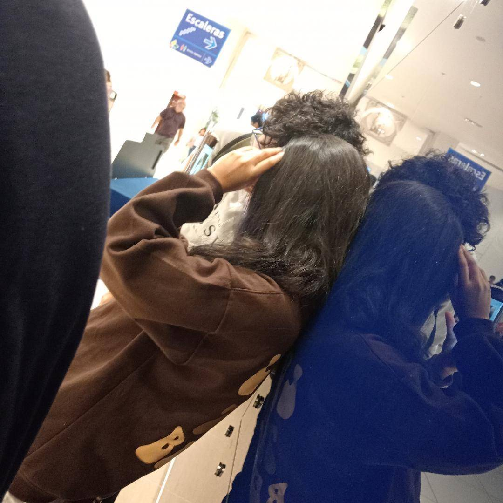
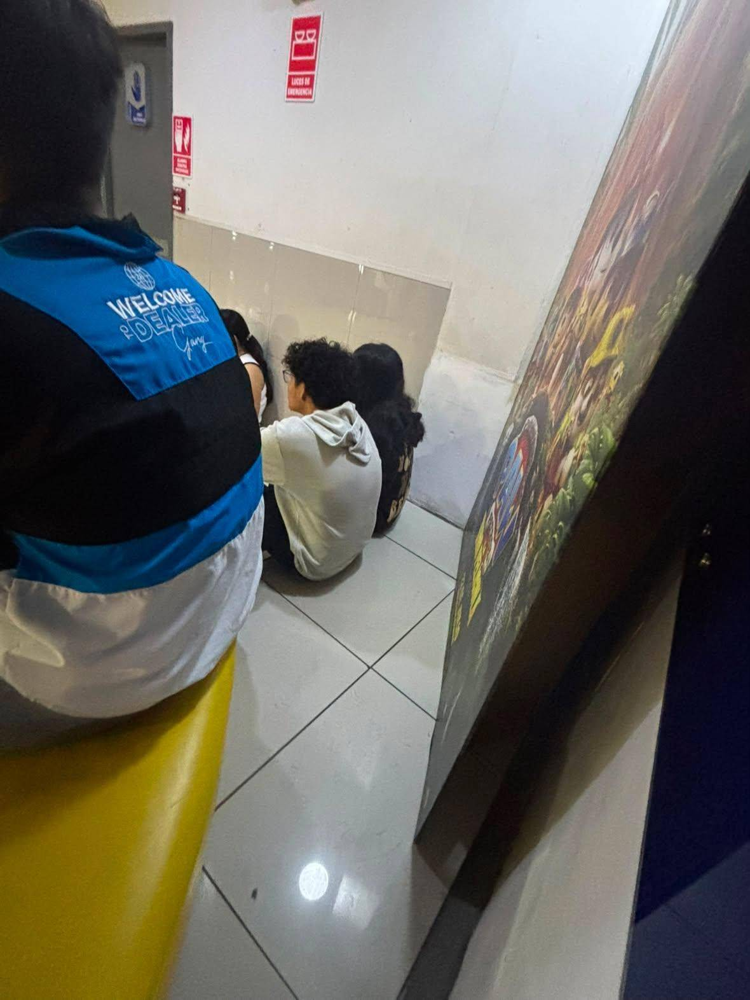
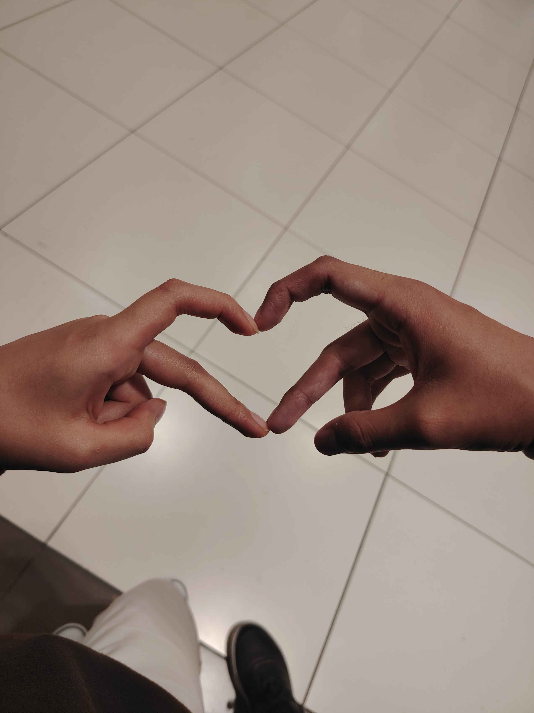
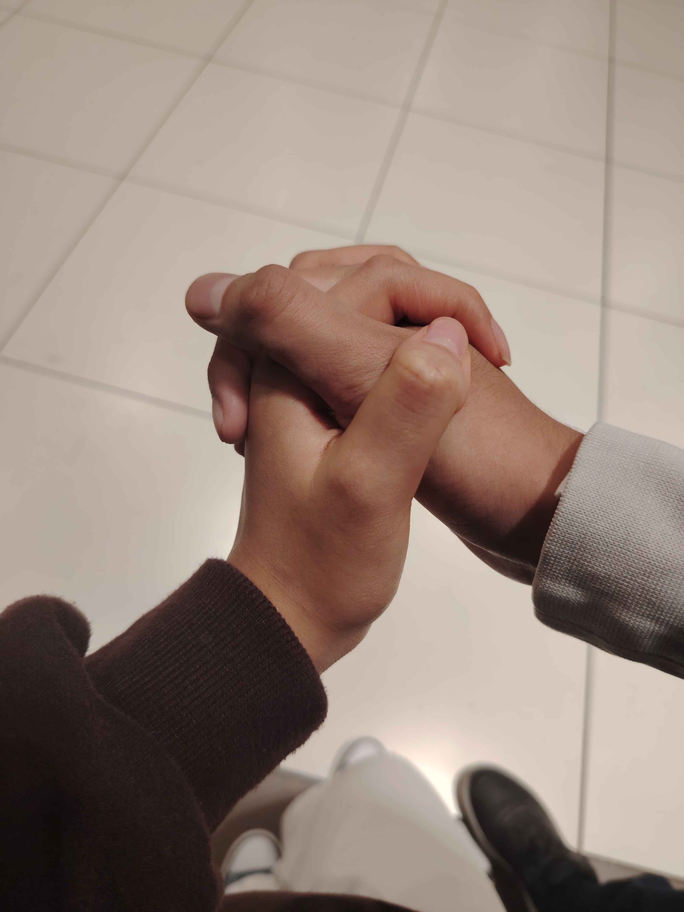
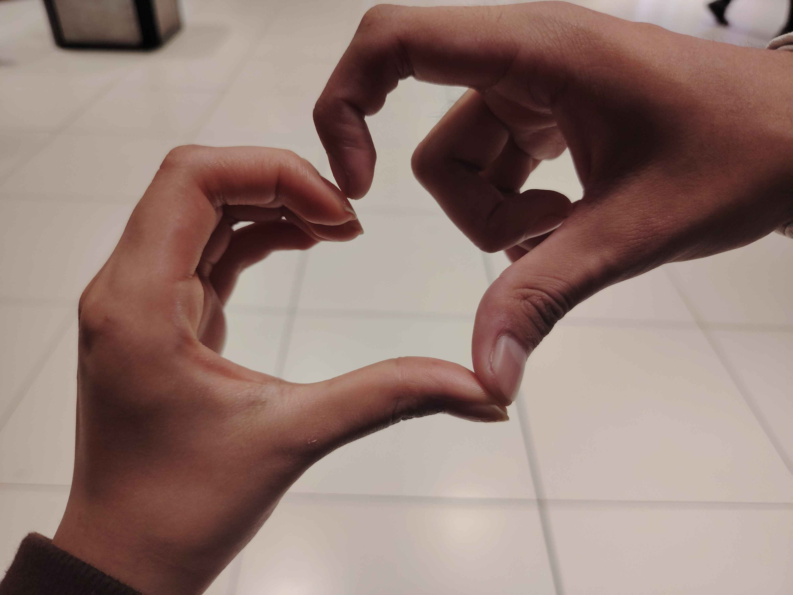
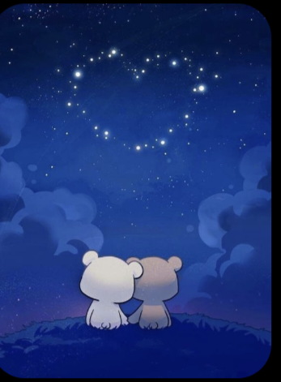
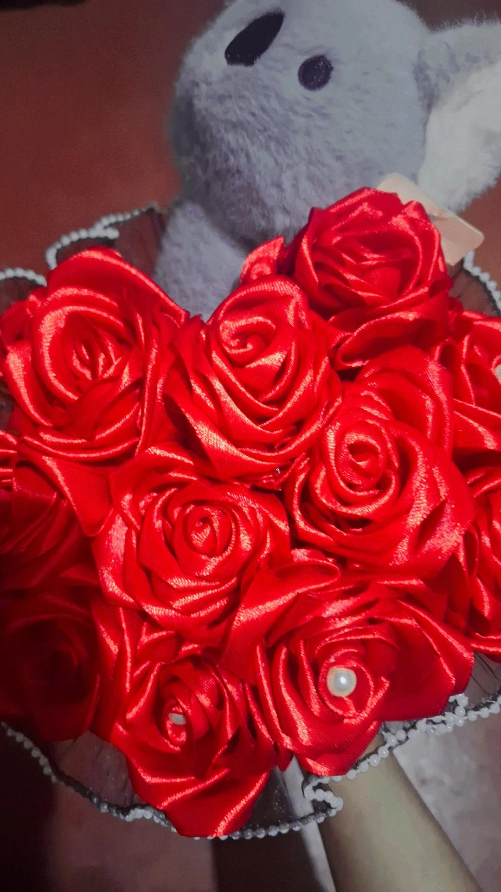
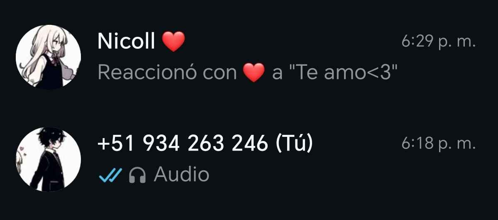
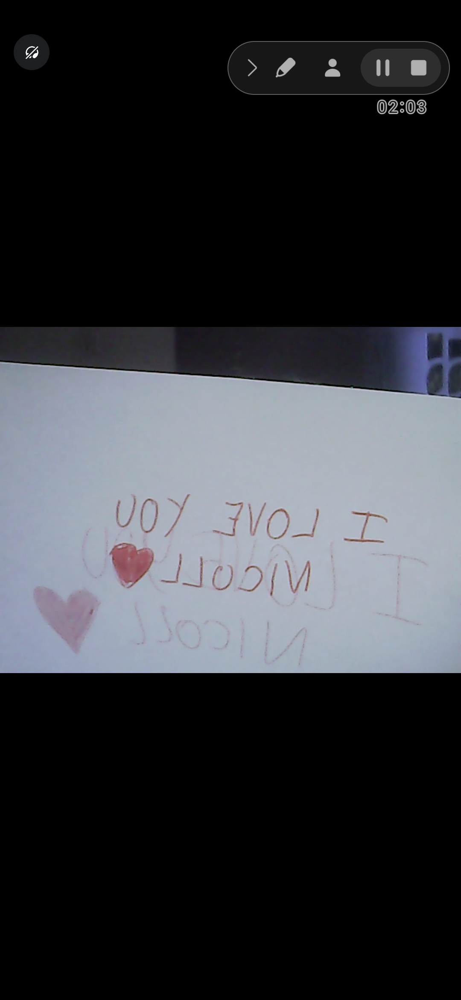
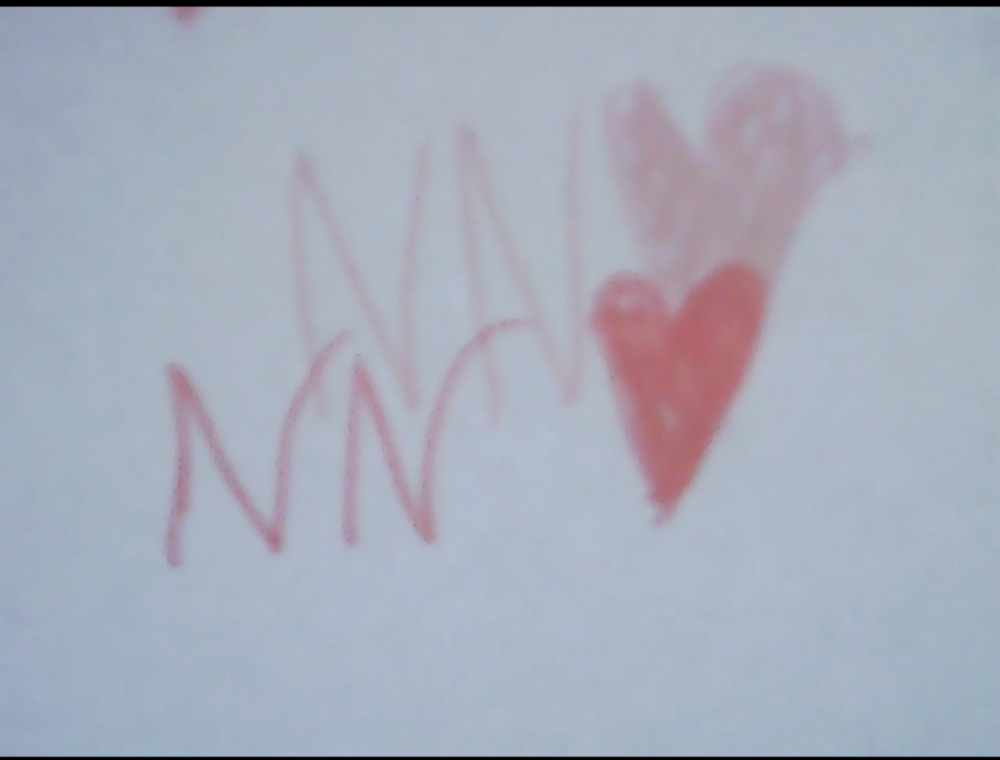
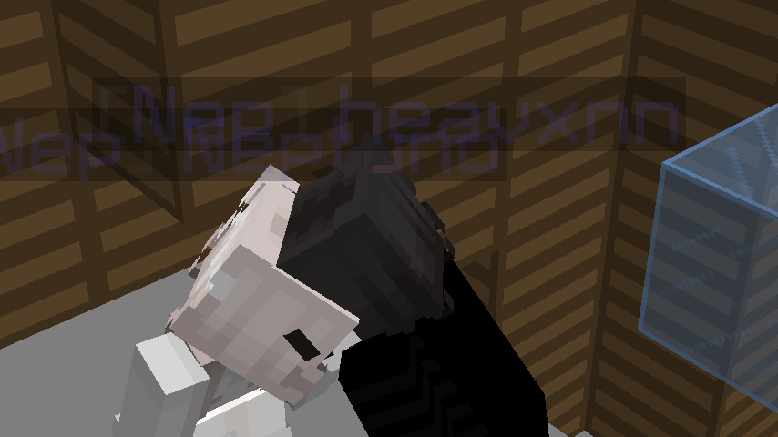
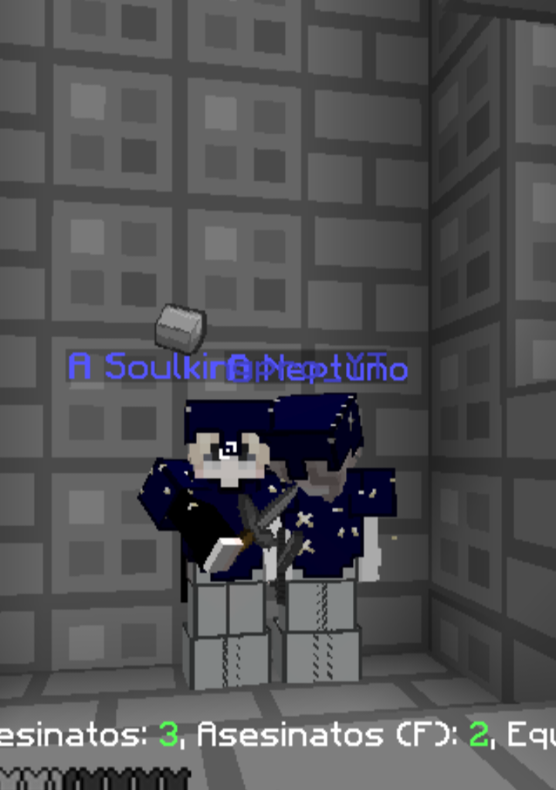
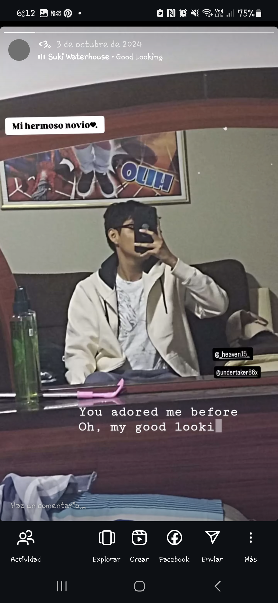
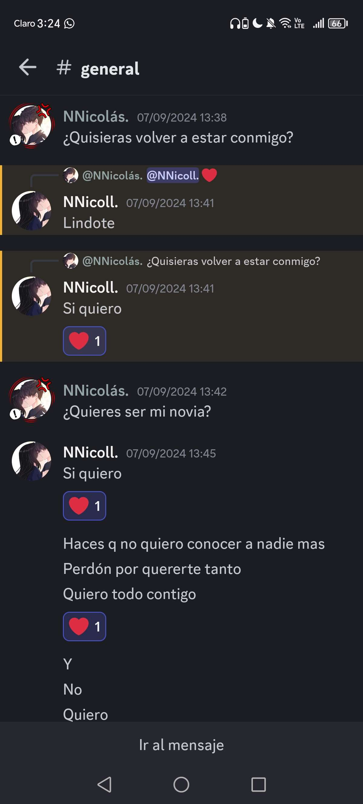
💌 Para ti
Hoy cumplimos dos años juntos, tu y yo, Mi Nicoll y tu Nicolas, juntos, hemos pasado por muchas cosas, muchos momentos en donde nos hemos sentido tristes, desanimados, alegres, felices y en todos esos momentos tu y yo hemos estado juntos, y seguiremos estándolo por toda la eternidad, yo me convertiré en testigo de Jehová por el bien de ambos y de nuestra relación, sueño con verte con vestido blanco y me veas con terno en unos los días más importantes para los dos, en donde nos casemos amada mía, te adoro mucho amor, te quiero demasiado y te amo mucho, tu eres lo que más amo en este mundo.
El tiempo pasa muy rápido no amor?, pero, eso me hace sentir feliz y un poco apenado también, feliz porque cada vez falta menos para poder volver a tocar tus manitos, y tu cuerpo y abrazarte, podré besarte en cualquier momento y tu me podrás dar cariñito siempre y yo también a ti amor, te quierooooo muchoooo, podré besarte, tu manito, tu carita, tu cabecita, tu piecito, tus labios, extraño mucho eso, pero pronto podremos y siempre amor mio, y me siento un poco apenado porque cuando nos casemos no quiero que pase el tiempo muy rápido, quiero que disfrutemos (y lo haremos) al 100% todo el tiempo que estemos juntos, cada segundo será valioso para mi, porque estarás a mi lado amor.
Quiero viajar contigo, estar más tiempo a tu lado, abrazarnos más veces, más fotografías, más recuerdos juntos.
Gracias por estos dos años amada mia. Gracias por formar parte de mi vida, por todos los momentos que me has dado y por seguir siendo tú, gracias por esforzarte tanto por mi, valoro mucho todo lo que haces por mí, te lo agradezco amorcito, te quiero muchoooooo<3
Te amo demasiado mi vida, estos dos años son el inicio de nuestra historia juntos, estaremos siempre juntos eternamente.
Feliz segundo aniversario, mi amor. ❤️
Atte: Tu futuro esposo Nicolas ❤️
✨ Nuestras primeras veces
Algunos de los primeros momentos que hicieron especial nuestra historia ❤️
❤️ 1. La primera vez que hablamos
Recuerdo aquella vez en dónde comenzamos a hablar, en ese momento no sabía que esa conversación iba a terminar convirtiéndose en algo tan importante para mí 💖
❤️ 2. La primera que jugamos videojuegos juntos
Amé ese día, me encantó jugar contigo, fue demasiado divertido amé cada minuto, cada segundo de estar contigo y jugando videojuegos a tu lado, te amo mucho mi amor 💖
❤️ 3. Nuestra primera llamada
Escuchar tu voz por primera vez fue muy especial para mí, sentí que estábamos más cerca, que tú y yo éramos más cercanos, cuándo escuché tu voz, me enamoré de tu voz porque me encantó mucho y me encanta demasiado 💖
❤️ 4. Nuestro primer te quiero y te amo
La primera vez que me dijiste eso, mi corazón empezó a latir demasiado rápido, porque yo te amaba y te quería mucho, quería y deseaba estar contigo, y ser tu compañero de vida 💖
❤️ 5. La primera vez que empezamos a salir
Yo me sentí el hombre más feliz y afortunado de tener una novia y mi futura esposa, porque eres demasiado hermosa, amable, cariñosa, y tierna, te adoro amor ❤️
❤️ 6. La primera vez que nos vimos presencialmente
Cuando te ví, me enamoré muchísimo más de ti, eres hermosa, preciosa, bella, guapa, amo demasiado a mi mujer (tú) mi hermosa Nicoll 💖, tú altura es perfecta, tu cabello me encanta, tus hermosos ojos, tu hermosa personalidad me encanta, me encantas demasiado amor ❤️🥺
❤️ 7. La primera vez que tomé y besé tu manito
Tus manos son muy suavecitas y blanditas, muy lindas, me gustó mucho agarrarte las manitos al caminar, también me encantó besar tus manos, te amo ❤️
❤️ 8. La primera vez que nos abrazamos
Me gustó muchísimo, eres demasiado adorable, me gustas mucho amor mío, sentir que te abrazo y te envuelvo con mi calidez me encanta, te amo 🥺❤️
❤️ 9. La primera vez que nos besamos
Yo la verdad es que, al ver tus labios no pude aguantar y quería besarte cuando fuimos al cine, por eso te insistí pero de forma amable y poco a poco hasta que me dejes besarte, y empezamos a besarnos mucho, se sintió muy bien, y me gustó mucho cuándo nos dimos nuestro primer besito porque te alejaste y me dió mucha ternura porque te vi nerviosa y sonrojada, luego empezamos a besarnos mucho más jsjsjs, nos chapamos 🥺👉👈, te amo bebé 💖
❤️ 10. Esto no terminará aquí
Esto no terminará aquí, habrá más momentos y en todos esos momentos tú y yo estaremos juntos, mi amada futura esposa mi Nicollsita 💖
🎵 Nuestra canción
💍 Nuestro futuro
Un día llegará...
Un día podremos estar juntos sin tener que despedirnos.
Viajaremos juntos, tendremos nuestras fotografías, nuestros recuerdos y muchas historias nuevas.
Y algún día llegará ese momento especial...
En el que podremos decir:
"Lo logramos." ❤️
Mi Nicoll...
Amor mío estos dos años son solo el comienzo de nuestra historia y vida juntos.
Todavía nos quedan muchísimos recuerdos, viajes, fotografías, abrazos, risas y momentos que vivir.